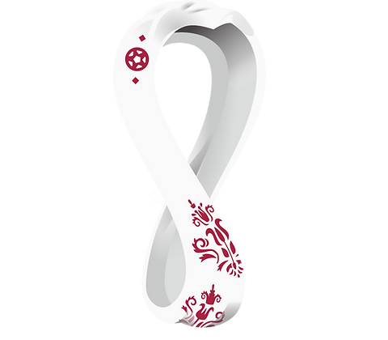

Cada vez estamos más cerca de que comience una edición más de la Copa del Mundo. El tiempo pasa muy rápido, y la Copa del Mundo Qatar 2022 está cada vez más cerca. Vale la pena recordar que contrario a lo que se acostumbra, en esta oportunidad el torneo se disputará en el mes de noviembre y parte de diciembre. Los aficionados esperan con muchos deseos que comience el torneo, sabiendo que no hay ningún certamen más emocionante y que reúna tantas figuras. Francia es el campeón vigente, existiendo otros 31 combinados que sueñan con levantar el trofeo.
La organización del torneo afina detalles para poder recibir a tiempo el prestigioso certamen, presumiéndose que ya están culminados ocho de los once estadios, además de tiempos de traslado muy cortos entre cada sede. A continuación, en GOAL te presentamos el conteo actualizado de cuántos días faltan para que ruede la pelota en Qatar 2022.

Aqui puedes ver más información sobre el torneo mas importante del mundo del deporte dando click en el boton "ver más información".
Ver más información
Aqui puedes ver más información sobre el torneo mas importante del mundo del deporte dando click en el boton "ver más información".
Ver más informaciónAqui puedes ver más información sobre el torneo mas importante del mundo del deporte dando click en el boton "ver más información".
Ver más información
Aqui puedes ver más información sobre el torneo mas importante del mundo del deporte dando click en el boton "ver más información".
Ver más información